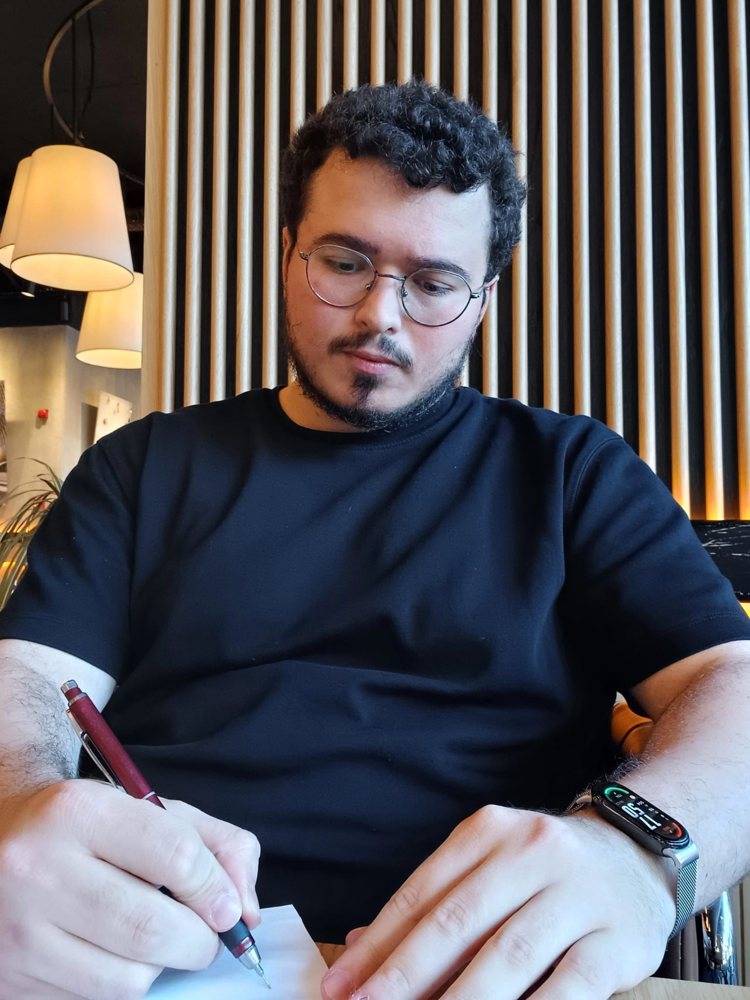

01ANLAMAK
Önce, sizi dinlemek.
Yaşadığınız güçlüğü ve hayatınızdaki yerini konuşur; beklentilerinizi, çalışma çerçevesini ve desteğin uygunluğunu birlikte değerlendiririz.
Kaygı, zorlayıcı düşünceler ve erteleme döngüleri içinde; sizin için önemli olan hayata birlikte yönelmek.

Sizi buraya getiren ne olursa olsun, ilk adım yaşadığınız güçlüğe birlikte bakmak.
Tüm çalışma alanlarıSürekli olasılıkları düşünmek, kontrol aramak ve kaçınmak yaşamınızı daraltıyor olabilir. Kaygının davranışlarınızla ilişkisini birlikte ele alabiliriz.
Tekrarlayan düşünceler, kendini eleştirme ve zihinsel uğraşlar. Düşüncenin içeriğinin yanında, hayatınızda nasıl bir işlev gördüğüne odaklanıyoruz.
Başlamak için doğru duyguyu beklemek, bazen başlamayı daha da zorlaştırır. Değerlerinizle bağlantılı, uygulanabilir davranış adımları üzerine çalışıyoruz.
Zorlayıcı yaşantıların bugünle kurduğunuz ilişkiyi nasıl etkilediğini, hızınıza ve ihtiyaçlarınıza uygun bir çerçevede ele alıyoruz.
Kabul ve Kararlılık Terapisi (ACT), zorlayıcı duygu ve düşüncelerle ilişkinize odaklanır. Amaç, onlar varken de sizin için önemli olan yönde adım atabilmektir.
Yaklaşımı yakından tanıyınBirbirini destekleyen altı süreç.
Merkezinde, sizin yaşamınız.
Dikkati, şu anda olan bitene yeniden yöneltmek.
Bir sürece dokunun, yaklaşımı keşfedin.
Nasıl ilerleyeceğimizi, beklentilerinizi ve sürecin size katkısını birlikte değerlendiririz.
Yaşadığınız güçlüğü ve hayatınızdaki yerini konuşur; beklentilerinizi, çalışma çerçevesini ve desteğin uygunluğunu birlikte değerlendiririz.
Görüşmelerde ele aldığımız becerileri, birlikte belirlediğimiz küçük ve uygulanabilir adımlarla gündelik yaşamınıza taşımayı deneriz.
Adımların hayatınızdaki karşılığına bakar; ihtiyaçlarınıza göre planı uyarlar, sürecin devamını veya tamamlanmasını konuşuruz.
Bir insanı, yaşadığı güçlükten ibaret görmüyorum. Benim için danışmanlık; sizi kendi koşullarınız içinde anlamak ve önem verdiğiniz yaşama birlikte alan açmak demek.
Uzman Psikolojik Danışman olarak, online bireysel görüşmelerde Kabul ve Kararlılık Terapisi yaklaşımıyla çalışıyorum.
Başlamadan önce aklınızda sorular olması çok doğal. Bazı yanıtları burada bulabilirsiniz.
18 sorunun tamamını görünPsikoterapi; duygu, düşünce ve davranış örüntülerini anlamaya ve değiştirmeye yönelik, psikolojik kuramlara dayanan profesyonel bir çalışma sürecidir. Amaç yalnızca konuşarak rahatlamak değildir; günlük yaşamda işlevselliği, ilişkileri ve baş etme becerilerini desteklemektir. Kullanılan yöntem, kişinin ihtiyacına ve uzmanın eğitimine göre belirlenir. Psikoterapi bazı durumlarda tek başına, bazı durumlarda psikiyatrik tedaviyle birlikte yürütülebilir.
ACT, davranışçı gelenek içinde gelişen, kabul ve farkındalık becerilerini değer odaklı davranış değişimiyle birleştiren bir yaklaşımdır. Temel hedefi psikolojik esnekliktir: zorlayıcı iç yaşantılar varken de koşullara ve kişinin değerlerine uygun davranabilmek. Düşüncelerin tamamını olumluya çevirmeyi veya kaygıyı bütünüyle ortadan kaldırmayı şart koşmaz.
Sizi görüşmeye getiren güçlükler, bunların günlük yaşamınıza etkisi ve süreçten beklentileriniz ele alınır. Önceki destek deneyimleri ve ilgili sağlık bilgileri de değerlendirmeye dahil olabilir. Çalışma biçimi, gizlilik, ücret ve randevu koşulları açıklığa kavuşturulur. İlk görüşme, ihtiyaç ile sunulan desteğin uygunluğunu birlikte değerlendirme alanıdır; her şeyi bir kerede anlatmanız beklenmez.
Mevcut bireysel danışmanlık hizmetinde seans süresi 45 dakika olarak belirtilmiştir. Güncel süre ve randevu koşulları görüşme öncesinde teyit edilir. Toplam seans sayısı; başvuru konusu, güçlüklerin süresi, hedefler ve süreçteki ilerlemeye göre değişir. Herkes için geçerli bir seans sayısı veya sonuç garantisi vermek doğru olmaz.
Mahremiyet, profesyonel çalışma ilişkisinin temelidir. Bununla birlikte gizlilik mutlak ve sınırsız bir söz değildir; ciddi güvenlik riskleri veya yasal yükümlülükler söz konusu olduğunda sınırları olabilir. Bilgilerin nasıl ele alınacağı ve olası istisnalar ilk görüşmede açıklanmalıdır. İletişim kanallarından ilk başvuruyu yaparken ayrıntılı kişisel veya sağlık bilgisi paylaşmanız gerekmez.
Görüşme seçeneklerini ve çalışma biçimini konuşalım. İlk temas için kısa bir mesaj yeterli.
Güncel ücret, uygun zamanlar ve görüşme koşulları ilk iletişimde netleştirilir.